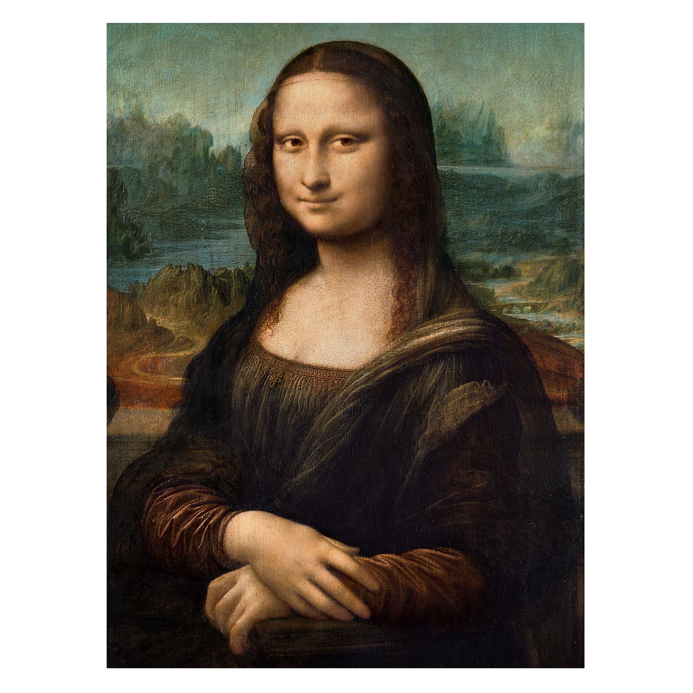
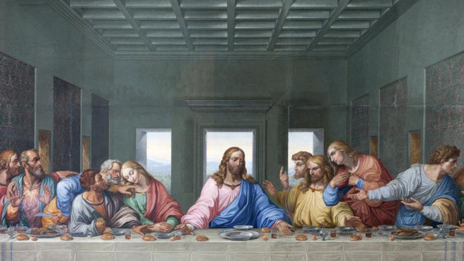
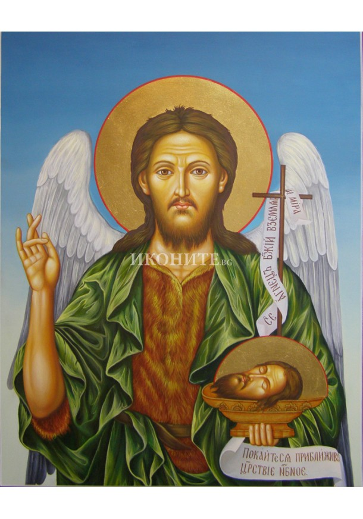
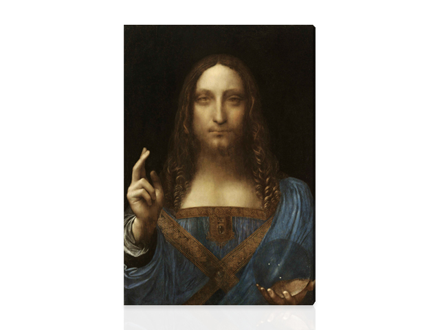

Леонардо да Винчи (на италиански: Leonardo di ser Piero da Vinci) (15 април 1452 – 2 май 1519) е знаменит италиански архитект, изобретател, инженер, скулптор и художник от епохата на Ренесанса. За него се казва, че е първообраз на ренесансовия човек и всеобхватен гений. Леонардо е прочут заради картините си, най-известните от които са „Тайната вечеря“ и „Мона Лиза“. Той е известен и с многобройните си изобретения, изпреварили времето си, но останали само на хартия. Допринася също така за развитието на анатомията, астрономията и инженерството.
Творби на Леонардо |
||
Mона Лиза 1503г. |
||
|  |  |  |
|  | ||